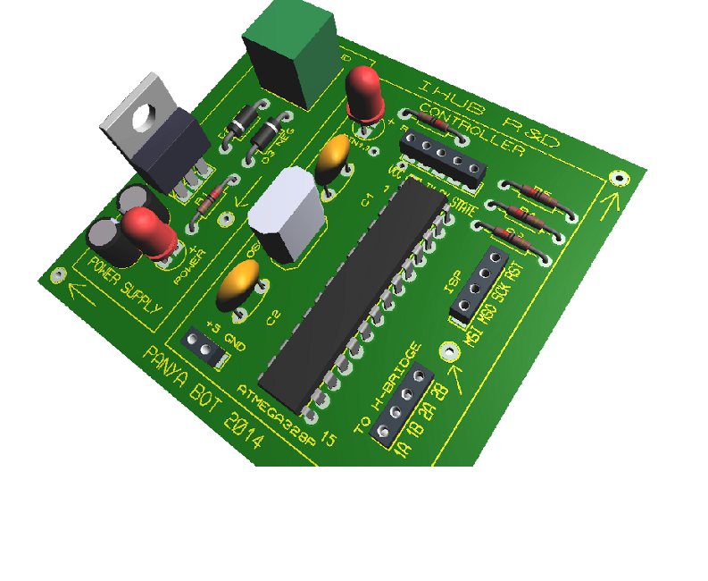
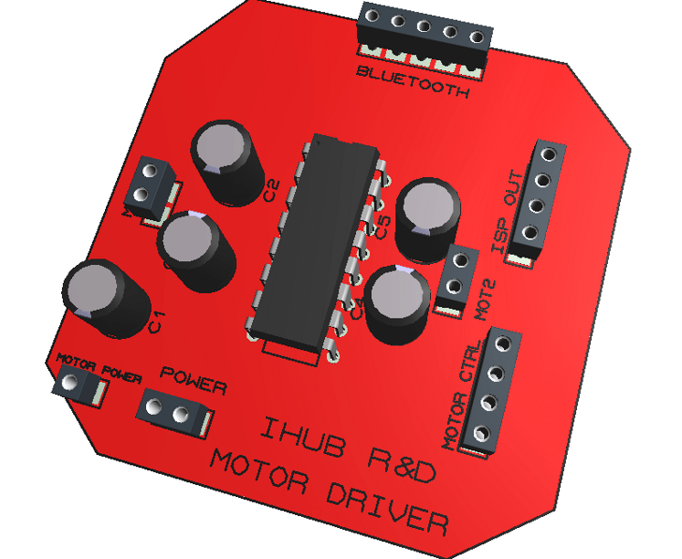
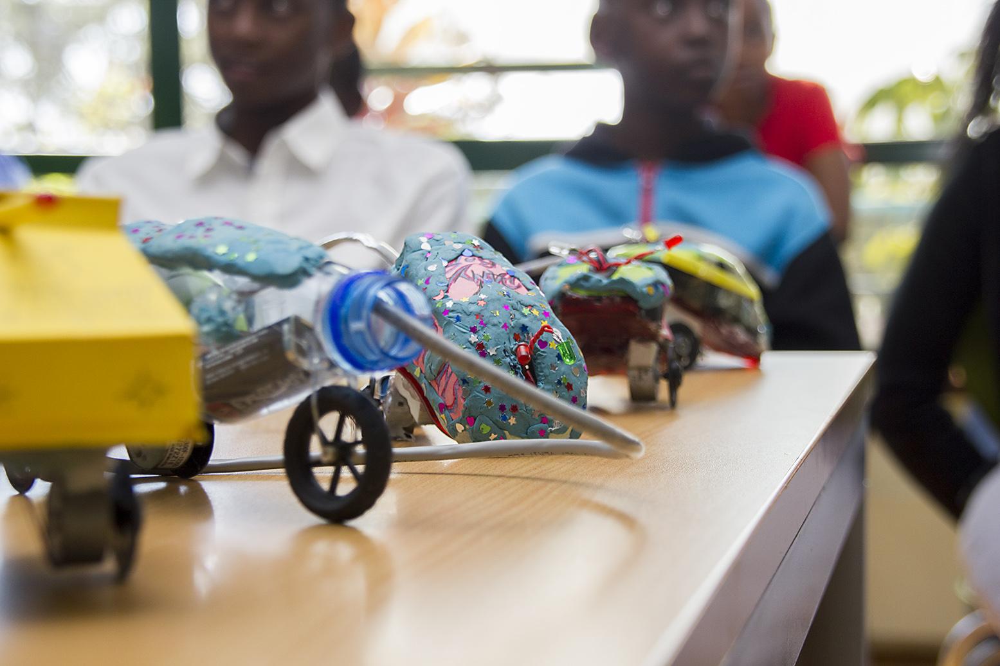
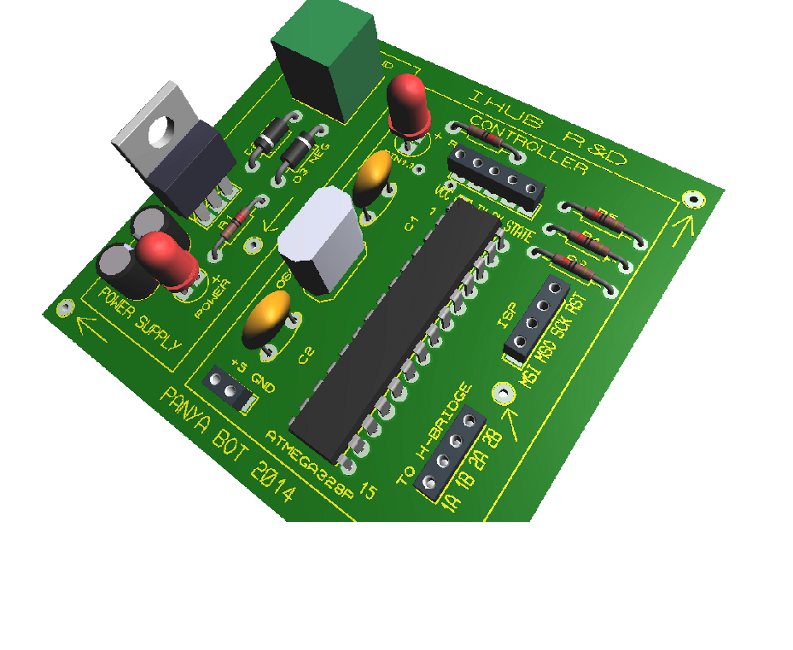
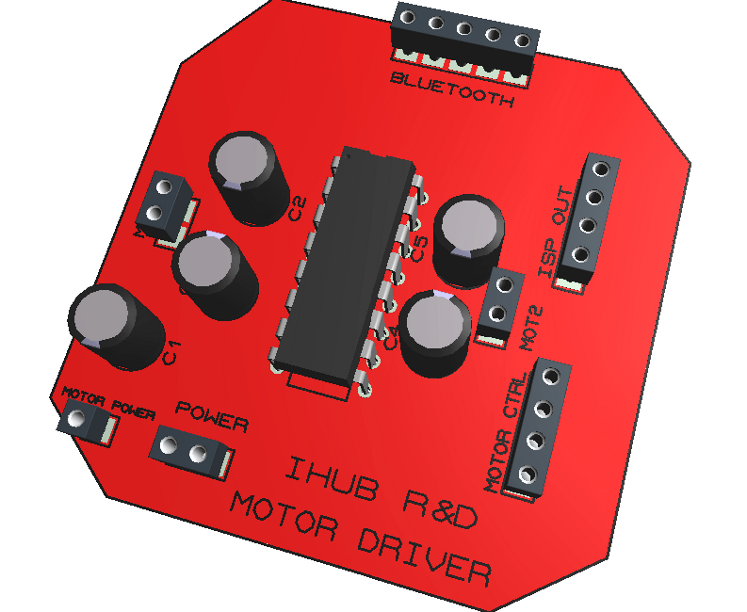
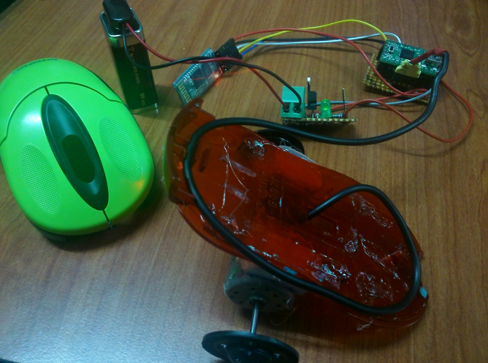

The board
The spatial limitations met while trying to squeeze the required circuitry into a mouse shell necessitated us to split the board into main sections: the control & power circuit and the motor driver. These are illustrated below.
 About
PanyaBot is a low cost robot that as well as being exciting and entertaining is also a learning platform for kids and teens
(7-18) who are curious and want learn more about programming, engineering and science.

We envision it as a low cost educational tool and have made it so using recycled materials; the chassis of the bot is made from old disused USB PC mice and the motors are recycled from old DVD players. This is hoped to make it more accessible to a greater audience, thereby reducing the barrier to entry that is especially prevalent in low income areas. Succinctly put, to stir a culture of inquisitive makers irrespective of socioeconomic background, while helping to mitigate the endemicity of e-waste.
Hardware
A tenet defining the PanyaBot was its inception in recycled components and materials. However, some sections of the bot, such as the board, had to be designed from scratch.
The spatial limitations met while trying to squeeze the required circuitry into a mouse shell necessitated us to split the board into main sections: the control & power circuit and the motor driver. These are illustrated below.
 The chassis is made by reusing an old PC mouse, which you can either salvage from an old PC or buy (they cost about $2 here in Kenya). The motors are salvaged from old and/or broken DVD, VCD players.
We're trying to keep costs as low as possible in order to make our product acessible to as many people as possible. All of the required components were obtained from local stores.
Software
Stumptown helvetica cardigan, odd future seitan tattooed flannel. Kale chips direct trade cray beard. 8-bit etsy butcher post-ironic blog lo-fi mcsweeney's, sustainable pickled umami flexitarian DIY ethical plaid trust fund. Wolf cred organic, terry richardson aesthetic four loko occupy vegan chillwave readymade deep... Read more
Cosby sweater odd future gluten-free actually dreamcatcher. Fixie cray vice sriracha disrupt, lo-fi pitchfork mcsweeney's swag YOLO meh chambray etsy. Keytar sriracha fanny pack church-key hashtag vice blog. 3 wolf moon VHS helvetica, raw denim deep v shoreditch seitan twee... Read more
Locavore irony gastropub chillwave, butcher meggings flexitarian pinterest master cleanse godard. Intelligentsia pop-up neutra, williamsburg gastropub godard pinterest swag deep v umami lomo. Butcher next level 90's wolf bushwick, narwhal photo booth YOLO kale chips whatever small batch. Meh viral ethical hella cardigan portland, street art mlkshk meggings mixtape kale chips cliche messenger bag pitchfork... Read more
Stumptown helvetica cardigan, odd future seitan tattooed flannel. Kale chips direct trade cray beard. 8-bit etsy butcher post-ironic blog lo-fi mcsweeney's, sustainable pickled umami flexitarian DIY ethical plaid trust fund. Wolf cred organic, terry richardson aesthetic four loko occupy vegan chillwave readymade deep... Read more
Cosby sweater odd future gluten-free actually dreamcatcher. Fixie cray vice sriracha disrupt, lo-fi pitchfork mcsweeney's swag YOLO meh chambray etsy. Keytar sriracha fanny pack church-key hashtag vice blog. 3 wolf moon VHS helvetica, raw denim deep v shoreditch seitan twee... Read more
Locavore irony gastropub chillwave, butcher meggings flexitarian pinterest master cleanse godard. Intelligentsia pop-up neutra, williamsburg gastropub godard pinterest swag deep v umami lomo. Butcher next level 90's wolf bushwick, narwhal photo booth YOLO kale chips whatever small batch. Meh viral ethical hella cardigan portland, street art mlkshk meggings mixtape kale chips cliche messenger bag pitchfork... Read more
Play
Pinterest semiotics single-origin coffee craft beer thundercats irony, tumblr bushwick intelligentsia pickled. Narwhal mustache godard master cleanse street art, occupy ugh selfies put a bird on it cray salvia four loko gluten-free shoreditch. Occupy american apparel freegan cliche. Mustache trust fund 8-bit jean shorts mumblecore thundercats. Pour-over small batch forage cray, banjo post-ironic flannel keffiyeh cred ethnic semiotics next level tousled fashion axe. Sustainable cardigan keytar fap bushwick bespoke.